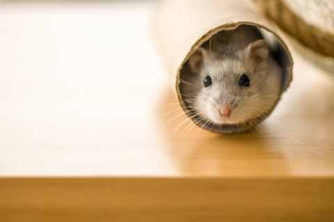

I'm only little but I still like to stretch my legs! Us little fur balls need a minimum of 450 square inches of unbroken floor space.
This is a picture of my home, its actually an Ikea cabinet laid downwards. As a guide a 40 gallan tank is a good start.
We are natural borrowers and love to tunnel down and create a network of different tunnels. Just like you we have seperate rooms for things like sleeping, eating and going to the bathroom and we normally need at least 6 inches of bedding to make a good home.
Please be careful what material you choose to put in our enclosures as pine and cedar shavings are harmful to us.
We love to exercise and we can run up to 9km a night so dont forget to add an exercise wheel for as well.
We love to play and not just on our wheel, so please give us lots of toys and little hideouts. You can even use cardboard boxes or toliet rolls, we love them!
Charlotte Forte